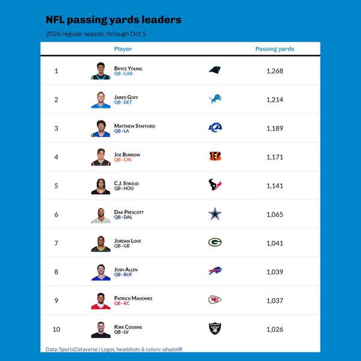
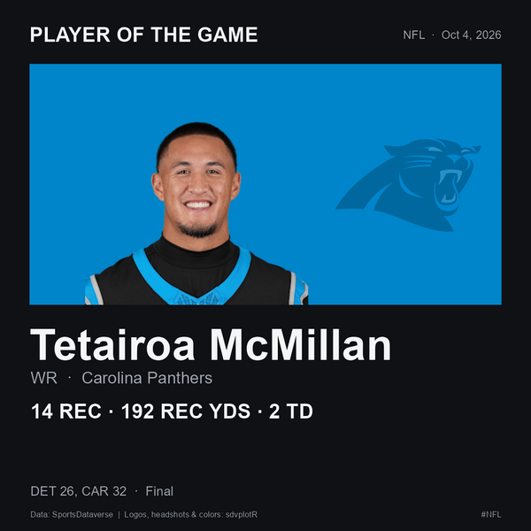

On this page
examples/automation/sdvplotR_social.R is a complete,
scheduled social-media workflow built on sdvplotR. One script makes
season leaderboards and game-day graphics, writes alt text and captions
for them, and posts them to Bluesky. A GitHub Actions template runs it
every week. It covers the NFL, the NBA, the WNBA, MLB and the NHL. The
data comes from the SportsDataverse release files (nflreadr, hoopR, wehoop, fastRhockey) and the
MLB Stats API (baseballr), so nothing
needs an API key.
The script is base R plus sdvplotR, the data packages, httr2 and jsonlite. It lives outside the package, so copy it into your own repository and change it.
What it makes
A leaderboard (leaderboard) is a gt
table of a season’s leaders in one stat. Each row has the player’s
headshot (gt_sdv_headshots()), team logo
(gt_sdv_logos()) and a team-colored subtitle
(gt_merge_stack_team_color()). The table is dressed in the
leading player’s team colors (gt_theme_sdv_team()) and
saved at a social size with gt_social_crop(): 1080 x 1080,
or 1200 x 675 with --size landscape.

Final-score cards (gameday) are ggplot2
images, 1200 x 675, one per game. Each team sits on its own color
(sdv_team_colors()), with its logo
(geom_sdv_logos()) on a white disc so a logo drawn in the
team’s own color still shows. The score is printed in black or white,
whichever reads better on that color, and the winner’s score is bold
(after a tie, neither is).

A player-of-the-game card (also
gameday), 1080 x 1080, shows the day’s best performance by
a player on a team that did not lose, across all of the day’s finals
(not only the games that get a card). It has the headshot
(geom_sdv_headshots()) on the team’s color, the stat line
and the result.

The images above are real output of a run on October 5, 2026, scaled down for this page. Every image carries a source credit.
“Best performance” is a simple rule per sport, and you can change it
in fetch_box():
| Sport | Rule |
|---|---|
| Football | Standard fantasy points, as nflverse computes them |
| Basketball | John Hollinger’s game score |
| Hockey | A simplified Dom Luszczyszyn game score for skaters: goals, assists, shots and blocks |
| Baseball | none: MLB box scores have no release file, so MLB posts the score cards only |
Offseason-safe
Neither command fails because a league is between seasons:
-
gamedayuses the most recent date with finished games when the requested date has none, moving to the season before when the new one has not started. -
leaderboarduses the latest season that has regular-season leaders.
Both say what they substituted in the caption, for example “No 2026-27 regular-season leaders yet, so these are 2025-26.”
Run it locally
From a clone of sdvplotR, with sdvplotR installed:
Rscript -e 'install.packages(c("nflreadr", "hoopR", "wehoop", "fastRhockey", "baseballr", "httr2", "jsonlite", "webshot2"))'
Rscript examples/automation/sdvplotR_social.R leaderboard --league nfl
Rscript examples/automation/sdvplotR_social.R leaderboard --league nba --stat assists --size landscape
Rscript examples/automation/sdvplotR_social.R gameday --league nfl --date 2026-10-04
Rscript examples/automation/sdvplotR_social.R postThe leaderboard renders in headless Chrome (webshot2, as
gt_save_crop() does), so Chrome or Chromium must be
installed. The game-day cards need only ggplot2.
Each command writes its PNGs to out/<today>/ and
adds its posts to out/<today>/manifest.json. A re-run
replaces its own posts and keeps the others. post reads the
newest out/<date>/manifest.json unless you pass
--manifest:
{
"version": 1,
"date": "2026-10-05",
"posts": [
{
"key": "nfl-gameday-2026-10-04-1",
"fresh": true,
"thread": "nfl-20261004",
"league": "nfl",
"kind": "gameday",
"caption": "NFL final scores, Sunday, Oct 4, 2026. Player of the game: Tetairoa McMillan, ...",
"hashtags": ["NFL", "sdvplotR"],
"images": [
{"path": "nfl-20261004-player-of-the-game.png", "width": 1080, "height": 1080,
"alt": "Player of the game card with a headshot: Tetairoa McMillan, WR, ..."}
]
}
]
}A Bluesky post holds at most four images. A slate with more games becomes a thread: the first post carries the player card and three score cards, and each later post carries four more cards and replies to the first.
Each post has a key (league, kind, and the game date or
the season) and a fresh flag. A game-day post is fresh when
its games are from the requested date, not an offseason stand-in. A
leaderboard is fresh while its schedule has regular-season games left to
play, and its table says “through” the last one played; a finished
regular season’s table is stale, even while the playoffs go on.
| Option | Command | Meaning |
|---|---|---|
--league |
leaderboard, gameday
|
nfl, nba, wnba,
mlb or nhl
|
--season |
leaderboard |
the season (the year it ends, for the NBA and NHL); default: the current one |
--stat |
leaderboard |
NFL: a column of nflreadr::load_player_stats(), such as
rushing_yards; NBA and WNBA: points,
rebounds, assists, steals,
blocks or three_point_field_goals_made (per
game); NHL: points, goals,
assists, shots_on_goal, hits or
blocked_shots; MLB: a Stats API leader category such as
homeRuns, or pitching.strikeouts for a
pitching one |
--top |
leaderboard |
rows: default 10 square, 5 landscape |
--size |
leaderboard |
square (1080 x 1080) or landscape (1200 x
675) |
--date |
gameday |
YYYY-MM-DD; default yesterday |
--max-games |
gameday |
the most score cards to draw; default every game. A capped slate’s caption says how many it shows (“8 of 14 games”) |
--out |
all | the output root; default out
|
--manifest |
post |
the manifest to post; default the newest under
--out
|
--post |
post |
really post (otherwise a dry-run) |
--include-stale |
post |
post stale posts too |
--ledger |
post |
the posted-ledger; default <out>/posted.json
|
Post to Bluesky
post is a dry-run unless you pass --post.
It checks every post the way Bluesky would: one to four images, alt text
on each, and text of at most 300 graphemes. A long caption is shortened
and keeps its hashtags. Then it prints each post’s text, images and alt
text, and whether it would be posted or skipped. The script’s pieces can
be used on their own: source() it and it only defines
functions. Here is the text a long caption becomes, and the facets that
make its hashtags links, as UTF-8 byte offsets:
social <- new.env()
sys.source("../../examples/automation/sdvplotR_social.R", envir = social)
post <- list(
caption = paste(
"NFL final scores, Sunday, Oct 4, 2026. Player of the game: Tetairoa McMillan,",
strrep("a very long stat line, ", 12)
),
hashtags = list("NFL", "sdvplotR")
)
text <- social$post_text(post)
social$graphemes(text)
#> [1] 300
cat(text)
#> NFL final scores, Sunday, Oct 4, 2026. Player of the game: Tetairoa McMillan, a very long stat line, a very long stat line, a very long stat line, a very long stat line, a very long stat line, a very long stat line, a very long stat line, a very long stat line, a very long stat line…
#>
#> #NFL #sdvplotR
str(lapply(social$hashtag_facets(text), function(f) f$index))
#> List of 2
#> $ :List of 2
#> ..$ byteStart: int 288
#> ..$ byteEnd : int 292
#> $ :List of 2
#> ..$ byteStart: int 293
#> ..$ byteEnd : int 302Two rules keep a schedule from repeating itself:
-
Only fresh posts go out. Stale ones (an offseason
stand-in date, a finished season’s leaders) are skipped unless you pass
--include-stale. From February to August, a weekly NFL run makes the Super Bowl card but does not post it again each week. A manifest made before yesterday is stale as a whole, so an old folder of fresh posts never goes out late. -
Nothing is posted twice.
postkeeps a ledger,out/posted.json, beside the dated folders. Each post’s key is recorded as soon as the post is made, so a re-run skips it. A thread that failed partway resumes where it stopped, replying to the posts already made.
To post for real:
In Bluesky, open Settings > Privacy and security > App passwords and create an app password. Never use your account password.
-
Set the handle and app password, then post:
The script makes three AT Protocol calls with httr2:
-
com.atproto.server.createSessionlogs in. -
com.atproto.repo.uploadBlobuploads each image. A PNG over Bluesky’s 1,000,000-byte limit is sent as a JPEG. -
com.atproto.repo.createRecordcreates the post, with each image’s alt text and aspect ratio and with the hashtags as tag facets.
If Bluesky answers 429 (rate limited), the script waits until the
reset time it gives, at most a minute, and tries again, up to four
attempts in all. Logging in and uploading also retry a 5xx answer or a
dropped connection, after 1, 2 and 4 seconds. Creating the post is never
retried after such a failure, because the post may exist: its ledger
entry stays pending, and later runs skip it until you check
the account and delete the entry. Errors name the call and Bluesky’s
error, never the credentials. Set BSKY_SERVICE to post
through another PDS; unset or empty means
https://bsky.social.
Schedule it with GitHub Actions
examples/automation/workflows/sdvplotR-social.yml is a
template for your own repository:
- Copy
sdvplotR_social.Rtoscripts/sdvplotR_social.Rin your repository. - Copy the template to
.github/workflows/sdvplotR-social.yml. - Add the repository secrets
BSKY_HANDLEandBSKY_APP_PASSWORD(Settings > Secrets and variables > Actions).
Every Monday, and whenever you run it by hand, the workflow installs
R, sdvplotR and the data packages (r-lib/actions/setup-r
and setup-r-dependencies), makes the graphics, prints the
would-be posts and uploads out/ as an artifact. Everything
it installs is pinned (sdvplotR to a commit, the data packages to
versions), so a scheduled run never picks up a change you have not
tried; to upgrade, change the SHA and copy that commit’s script. It has
read-only repository permissions and posts only when both of these
hold:
- you start a run by hand with post checked, or set
the repository variable
SDVPLOTR_POSTtotrueto post on the schedule; - both secrets are set.
To post through another PDS, set the repository variable
BSKY_SERVICE.
The posted-ledger is kept between runs with
actions/cache: each run restores the newest copy and saves
its own. GitHub drops a cache that goes unused for 7 days, so a weekly
schedule can lose it. That is harmless, because fresh posts are dated
and each week’s are new. The ledger guards against re-runs and second
runs on the same day.
ubuntu-latest ships Chrome, so the leaderboard tables
render there with no setup.
sdvplotR runs the same script in its own CI each week
(.github/workflows/automation-example.yaml) in dry-run
mode, so the example keeps working. That workflow has no secrets and
never passes --post, and the script also refuses
--post in sdvplotR’s own GitHub Actions.
Adapt it
-
Other stats. Pass
--stat; a stat the NFL’s player stats do not have prints the columns they do have. -
Other leagues. Add an entry to
LEAGUES(its hashtag, a default stat, its calendar), a branch toleader_rows()andfinals()that loads its release data, and a rule tofetch_box()for the player card. College leagues would need per-player season totals, which their release files do not carry yet. -
Your look. The layouts are short functions
(
score_card(),potg_card(),leaderboard_image()). Swapgt_theme_sdv_team()for anothergt_theme_*()(see SportsDataverse Table Themes), or change the colors at the top of the script. -
Other networks.
postreads onlymanifest.json, so another network is one more client besidebluesky(). For Mastodon, upload each image to/api/v2/mediawith itsdescription(the alt text), then create a status with/api/v1/statuses, passingmedia_idsandin_reply_to_idfor a thread.
Related
- Social Posting covers sizes and layouts for posting by hand.
-
Saving and Posting Tables covers
gt_save_crop()andgt_social_crop(). - The NFL weekly and other leaderboards rebuild with this site every week.